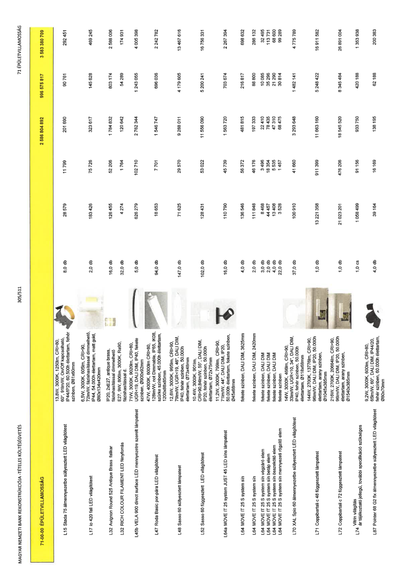

| Tétel | Menny. | Egys. | Anyag e.ár (net HUF) | Díj e.ár (net HUF) | Anyag összesen (net HUF) | Díj összesen (net HUF) | Anyag+Díj összesen (net HUF) |
|---|---|---|---|---|---|---|---|
| 71-00-00 ÉPÜLETVILLAMOSSÁG | NaN | NaN | 0 | 0 | 2 586 804 892 | 996 575 817 | 3 583 380 709 |
| 13,8W, 3000K, 1250lm, CRI>80, 60°, 91lm/W, On/Off kapcsolható, IP44/IP20, 60.500h élettartam, fehér színben, Ø81x60mm | 0 | 0 | 0 | 0 | 0 | 0 | 0 |
| L15 Stada 75 álmennyezetbe süllyesztett LED világítótest | 8,0 | db | 28 579 | 11 799 | 201 690 | 90 761 | 292 451 |
| 6,5W, 3000K, 605lm, CRI>90, 72lm/W, fázishasítással dimmelhető, IP44, 54.000h élettartam, matt gold, Ø80x134x420mm | 0 | 0 | 0 | 0 | 0 | 0 | 0 |
| L17 io 420 fali LED világítótest | 2,0 | db | 183 426 | 75 726 | 323 617 | 145 628 | 469 245 |
| IP20, 2xE27, antique brass, fázishasítással dimmelhető | 0 | 0 | 0 | 0 | 0 | 0 | 0 |
| L32 Avignon Round 525 Antique Brass falikar | 16,0 | db | 126 455 | 52 206 | 1 784 832 | 803 174 | 2 588 006 |
| E27, 9W, 806lm, 3000K, Ra90, fázishasítással d. | 0 | 0 | 0 | 0 | 0 | 0 | 0 |
| L32 RICH COLOUR FILAMENT LED fényforrás | 32,0 | db | 4 274 | 1 764 | 120 642 | 54 289 | 174 931 |
| 71W, 3000K, 9020lm, CRI>80, UGR<19, DALI DIM, IP40, fekete színben, Ø900x92mm | 0 | 0 | 0 | 0 | 0 | 0 | 0 |
| L45b VELA 900 direct surface LED mennyezetre szerelt lámpatest | 5,0 | db | 626 279 | 102 710 | 2 762 344 | 1 243 055 | 4 005 398 |
| 47W, 4000K, 6000lm CRI>80, 128lm/W, not Dimmable, IP65, IK08, szürke színben, 45.000h élettartam, 1200x88x85mm | 0 | 0 | 0 | 0 | 0 | 0 | 0 |
| L47 Roda Basic por-pára LED világítótest | 94,0 | db | 18 653 | 7 701 | 1 546 747 | 696 036 | 2 242 782 |
| 12,6W, 3000K, 995lm, CRI>90, 79lm/W, UGR<19, 46°, DALI DIM, IP40, fehér színben, 50.000h élettartam, Ø73x48mm | 0 | 0 | 0 | 0 | 0 | 0 | 0 |
| L48 Sasso 60 süllyesztett lámpatest | 147,0 | db | 71 625 | 29 570 | 9 288 011 | 4 179 605 | 13 467 616 |
| 10,4W, 3000K, 901lm, CRI>90, 84lm/W, 55°, DALI DIM, IP20, fehér színben, 50.000h élettartam, Ø72x75mm | 0 | 0 | 0 | 0 | 0 | 0 | 0 |
| L52 Sasso 60 függesztett LED világítótest | 102,0 | db | 128 431 | 53 022 | 11 556 090 | 5 200 241 | 16 756 331 |
| 11,2W, 3000K, 799lm, CRI>90, 71lm/W, 44°, DALI DIM, IP20, 50.000h élettartam, fekete színben, Ø45x68mm | 0 | 0 | 0 | 0 | 0 | 0 | 0 |
| L64a MOVE IT 25 system JUST 45 LED síns lámpatest | 16,0 | db | 110 790 | 45 739 | 1 563 720 | 703 674 | 2 267 394 |
| fekete színben, DALI DIM, 3625mm | 0 | 0 | 0 | 0 | 0 | 0 | 0 |
| L64 MOVE IT 25 S system sín | 4,0 | db | 136 546 | 56 372 | 481 815 | 216 817 | 698 632 |
| fekete színben, DALI DIM, 2420mm | 0 | 0 | 0 | 0 | 0 | 0 | 0 |
| L64 MOVE IT 25 S system sín | 2,0 | db | 111 848 | 46 176 | 197 333 | 88 800 | 286 132 |
| fekete színben, DALI DIM | 0 | 0 | 0 | 0 | 0 | 0 | 0 |
| L64 MOVE IT 25 S system sín végzáró elem | 3,0 | db | 8 468 | 3 496 | 22 410 | 10 085 | 32 495 |
| fekete színben, DALI DIM | 0 | 0 | 0 | 0 | 0 | 0 | 0 |
| L64 MOVE IT 25 S system sín betáp elem | 2,0 | db | 44 457 | 18 354 | 78 435 | 35 296 | 113 731 |
| fekete színben, DALI DIM | 0 | 0 | 0 | 0 | 0 | 0 | 0 |
| L64 MOVE IT 25 S system sín összekötő elem | 4,0 | db | 13 408 | 5 535 | 47 310 | 21 290 | 68 600 |
| fekete színben | 0 | 0 | 0 | 0 | 0 | 0 | 0 |
| L64 MOVE IT 25 S system sín mennyezeti rögzítő elem | 22,0 | db | 3 528 | 1 457 | 68 475 | 30 814 | 99 289 |
| 14W, 3000K, 466lm, CRI>90, 33lm/W, UGR<10, 34°, DALI DIM, IP40, fehér színben, 50.000h élettartam, Ø118x68mm | 0 | 0 | 0 | 0 | 0 | 0 | 0 |
| L70 XAL Spio 60 álmennyezetbe süllyesztett LED világítótest | 37,0 | db | 100 910 | 41 660 | 3 293 648 | 1 482 141 | 4 775 789 |
| 144W, 2700K, 13776lm, CRI>90, 96lm/W, DALI DIM, IP20, 50.000h élettartam, arany színben, Ø1045x385mm | 0 | 0 | 0 | 0 | 0 | 0 | 0 |
| L71 Coppibantali c 48 függesztett lámpatest | 1,0 | db | 13 221 358 | 911 399 | 11 663 160 | 5 248 422 | 16 911 582 |
| 216W, 2700K, 20664lm, CRI>90, 96lm/W, DALI DIM, IP20, 50.000h élettartam, arany színben, Ø1540x385mm | 0 | 0 | 0 | 0 | 0 | 0 | 0 |
| L72 Coppibantali c 72 függesztett lámpatest | 1,0 | db | 21 023 201 | 476 206 | 18 545 520 | 8 345 484 | 26 891 004 |
| NaN | 0 | 0 | 0 | 0 | 0 | 0 | 0 |
| L74 Vitrin világítás ár tájékoztató jellegű, további specifikáció szükséges | 1,0 | cs | 1 058 499 | 91 156 | 933 750 | 420 188 | 1 353 938 |
| 9,2W, 3000K, 600lm, CRI>80, 65lm/W, 60°, DALI DIM, IP44/20, fehér színben, 60.000h élettartam, Ø80x70mm | 0 | 0 | 0 | 0 | 0 | 0 | 0 |
| L87 Pointer 68 G2 fix álmennyezetbe süllyesztett LED világítótest | 4,0 | db | 39 164 | 16 169 | 138 195 | 62 188 | 200 383 |
